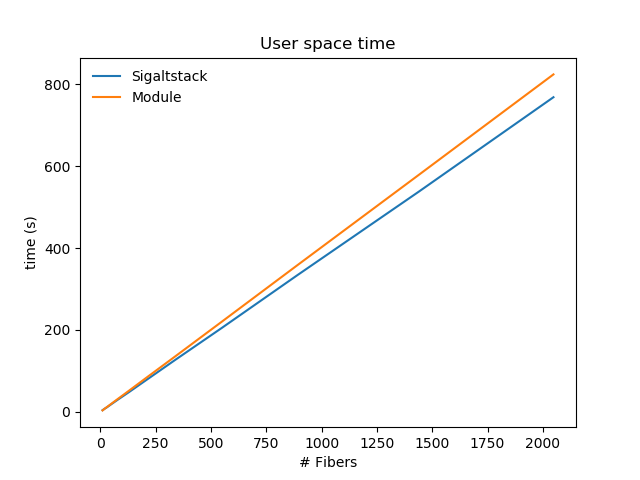
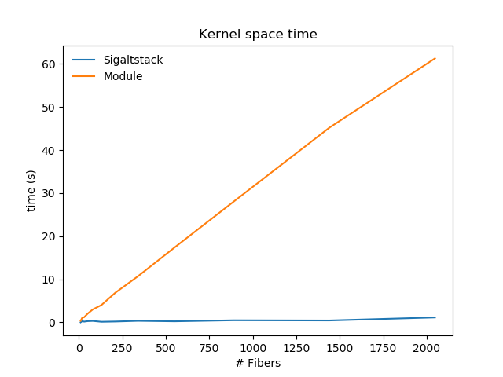

September 2018
Coroutines are a programming paradigm that offers time-sharing non-preemptive multitasking which can be used to implement many patterns such as the Actor model, State machines and Communicating Sequential Processes. This concept has influenced many programming languages such as Go and Clojure especially for handling asynchronous I/O operations.
In this document we present a Loadable Kernel Module (LKM) implementation taking as reference the Fibers implementation offered by Windows NT and ReactOS. While user space implementations are generally preferred for their low over-head and easier debugging, a kernel space implementation permits to understand more deeply how kernel subsystems work.
The project is composed of two main parts:
a LKM that implements the facilities to perform the yielding of a fiber and managing their context with an additional component that extends procfs to provide information about fibers under /proc/<tgid>
a user space library to invoke the previously mentioned facilities
The code has been tested from kernel 4.16 up 1.
The entry points to kernel space code are exported by the library which performs ioctl() calls to a special miscdevice registered by the module at load time. Differently from “typical” character devices, miscdevices are more suited for implementing just an entry point to kernel facilities than reserving a full range of minor numbers representing actual devices.
module/fibers.c
static struct file_operations fibers_fops = {
.owner = THIS_MODULE,
.open = device_open,
.release = device_release,
.unlocked_ioctl = device_ioctl
};
static struct miscdevice fibers_dev = {
.minor = MISC_DYNAMIC_MINOR,
.name = DEVICE_NAME,
.fops = &fibers_fops,
.mode = S_IALLUGO
};int init_module(void)
{
// Device registration for userspace-driver communication
int minor = misc_register(&fibers_dev);
if (minor < 0) {
alert("Failed to register /dev/%s\n", DEVICE_NAME);
return minor;
}
initialize_proc();
return SUCCESS;
}After the load of the module a new file called fibers is exposed in /dev and the .fibers folder appears under /proc. The file operations implemented for such device are open, release and ioctl which are called upon the respective system calls invokations on the file through the functions offered by the library.
lib/fibers.c
static void __fork_handler()
{
int err = close(__fibers_file);
__fibers_file = open("/dev/" DEVICE_NAME, 0);
if (__fibers_file < 0) {
log_fatal("Fiber file is not open, exiting...");
}
}
static void __file_opener()
{
__fibers_file = open("/dev/" DEVICE_NAME, 0);
if (__fibers_file < 0) {
log_fatal("Fiber file is not open, exiting...");
}
int err = pthread_atfork(NULL, NULL, __fork_handler);
if (err) {
log_fatal("Couldn't register atfork handler");
}
}The library provided defines a constructor function which opens the file thus instantiating one file descriptor2 designated to communicate with the module. Since a file descriptor represents a pool of fibers all the threads belonging to the process are allowed to interact and execute fibers of such process. Moreover, the code can easily be extended to support multiple opens of the fibers file to create separate pools of fibers and thus implement different scheduling strategies such as assigning different pools to different threads.
In order to avoid unintended sharing of fibers pool from parent process to child after a fork() caused by file descriptor inheritance, an atfork function is registered to be run on the child after a fork, which closes the parent descriptor and reopens the file.
Finally, in the library there are respectively implemented, based on ioctl calls on the __fibers_file file descriptor, the functions to convert a thread to fiber, create a new fiber, yielding from a fiber to another one and allocate and manage fixed size memory (Fiber Local Storage).
include/lib/fibers.h
void *to_fiber(void);
void *create_fiber(size_t stack_size, void (*entry_point) (void *),
void *param);
void switch_fiber(void *fid);
long fls_alloc(void);
bool fls_free(long index);
void fls_set(long index, long long value);
long long fls_get(long index);All these functions prepare data structures to be passed to their relative kernel space implementations and invoke the following wrapper of the ioctl system call. The code saves the callee-save register in case of switching from one fiber to another since they are not saved by the Linux system call dispatcher. This is needed in order to correctly save and restore the execution context of a fiber otherwise it would not be possible to obtain the state of such registers when the system call is performed in kernel space.
lib/fibers.c
long fib_ioctl(unsigned int fd, unsigned int cmd, unsigned long arg)
{
long res = 0;
if (cmd == IOCTL_SWITCH_FIB) {
asm volatile ("push %%rbx \n\t"
"push %%rbp \n\t"
"push %%r12 \n\t"
"push %%r13 \n\t"
"push %%r14 \n\t"
"push %%r15 \n\t"
"syscall \n\t"
"pop %%r15 \n\t"
"pop %%r14 \n\t"
"pop %%r13 \n\t"
"pop %%r12 \n\t"
"pop %%rbp \n\t" "pop %%rbx \n\t":"=a" (res)
:"0"(SYS_ioctl), "D"(fd), "S"(cmd), "d"(arg):
"memory");
} else {
asm volatile ("syscall \n\t":"=a" (res)
:"0"(SYS_ioctl), "D"(fd), "S"(cmd), "d"(arg):
"memory");
}
return res;
}include/module/common.h
struct fibers_data {
struct idr fibers_pool;
struct proc_dir_entry *base;
unsigned long fls[MAX_FLS];
unsigned long bitmap[FLS_BSIZE];
};When the constructor defined by the library is executed, the open file operation is performed which initializes a struct fibers_data that keeps the per process information such as:
fibers_pool: an idr data structure that maintains the fibers of the process. Internally it uses a radix tree, making efficient the assignment of an id to fibers and later retrieving them by the same id
base: the directory entry associated to /proc/.fibers/<tgid>, a directory keeping one file for each fiber created by the process. As explained later a symlink (fibers) to such directory is added under /proc/<tgid>
fls: an array keeping the allocation units provided to the fibers
bitmap: bitmap to manage the allocation and deallocation of the aforementioned units
The struct is then stored in the private_data field of the file descriptor which is a free field that can be used by device drivers for such purposes to later retrieve it on ioctl.
These data structures are finally freed on the release operation of the file which is called when the struct file associated to the file is going to be freed by the kernel, i.e. on close of the file or exit/fault of the process.
The fibers’ pool maintains structures of the following type.
include/module/common.h
struct fiber_struct {
unsigned long state; // RUNNING-STOPPED
unsigned long entry_point;
pid_t pid;
unsigned long activations;
atomic64_t failed_activations;
u64 laststart_utime;
u64 laststart_stime;
u64 utime;
u64 stime;
struct pt_regs exec_context;
struct fpu fpuregs;
};The entry_point is the address of the first instruction that a fiber will execute on first schedule
The exec_context and fpuregs fields are used to keep all the registers content to properly maintain the state of a fiber for context switching
The state field is used to avoid a fiber being run by two threads concurrently
The additional fields are used for statistics about the fibers which the user can retrieve from the file /proc/<tgid>/fibers/<fiber_id>
When the ioctl file operation is invoked, it calls the proper kernel space function to handle the user space request.
A fiber data structure is created in case of a create_fiber or a to_fiber call. The latter is only used to let the module acknowledge that some thread can switch to other fibers and execution can resume at such thread.
In brief the steps taken are:
Allocation of a struct fiber_struct, initialization of its fields and insertion in fibers_pool protected through rcu.
In the case of create_fiber also the following actions are taken to set the right instruction pointer, stack pointer and parameter which are given by the userspace
module/fibers_api.c
static inline void fiber_init_stopped(struct fiber_struct *f,
struct create_data *data)
{
f->state = FIB_STOPPED;
f->exec_context = *current_pt_regs();
f->exec_context.sp = (unsigned long)data->stack;
f->exec_context.ip = (unsigned long)data->entry_point;
f->exec_context.di = (unsigned long)data->param;
fiber_setup_stats(f, f->exec_context.ip);
}The stack is allocated by the userspace library as follows
lib/fibers.c
void *create_fiber(size_t stack_size, void (*entry_point) (void *), void *param)
{
void *stack = mmap(NULL, stack_size, PROT_WRITE | PROT_READ,
MAP_PRIVATE | MAP_ANON, -1, 0);
if (stack == NULL) {
log_fatal("Couldn't allocate stack");
}
struct create_data data = {
// x86-64 System-V ABI requires stack to be aligned at 16 byte before
// issuing a `call` and compilers assume this when compiling the
// entry points of fibers. Therefore in order to emulate a call we
// need to remove 8 bytes as if there was the return address to the
// caller.
.stack = (void *)(((unsigned long)stack) + stack_size - 8),
.entry_point = entry_point,
.param = param
};When adding the fiber in fibers_pool also a file under /proc/.fibers/<tgid> is created with name the id of the fiber. In the field data of proc_dir_entry corresponding to /proc/.fibers/<tgid>/<fiber_id> is stored a pointer to the associated struct fiber_struct to easily retrieve its statistics and then display them to the user.
Since it is needed to know which fiber is running on a given thread, at the bottom of the kernel stack, immediatly above the struct thread_info, is stored the pointer to the struct fiber_struct. .
include/module/fibers_api.h
#define current_fiber ( \
*((struct fiber_struct **) \
(((unsigned long)current->stack) + \
sizeof(struct thread_info))) \
)The macro shown above acts as a per-thread kernel variable. Therefore to_fiber sets current_fiber as follows
module/fibers_api.c:to_fiber
module/fibers_api.c
long switch_fiber(struct fibers_data *fibdata, fid_t fid)
{
struct fiber_struct *next, *prev;
bool old;
struct pt_regs *regs;
u64 utime, stime; old = test_and_set_bit(0, &(next->state));
if (unlikely(old == FIB_RUNNING)) {
atomic64_inc(&next->failed_activations);
return -1;
} regs = current_pt_regs();
prev->exec_context = *regs;
*regs = next->exec_context;
fpu__save(&prev->fpuregs);
preempt_disable();
fpu__restore(&next->fpuregs);
preempt_enable();
test_and_clear_bit(0, &(prev->state));
current_fiber = next;
return 0;
}First it is checked whether the fiber is already running through an atomic test-and-set on the state of the fiber, in which case the switch simply fails. The switch also fails in case the caller has not performed to_fiber previously. This is ensured by checking whether current_fiber is zero which is safe only if the kernel allocates a zeroed stack to a thread and no stack overflow has happened.
Then the switch is performed by using the struct pt_regs found at the top of the kernel stack which has been previously pushed by the Linux system call dispatcher. By changing its fields and setting them to the values of the fiber we want to switch to, when the dispatcher will restore the userspace context, will let the execution proceed to the just set context.
Finally the fpu registers are changed by using the functions provided by the kernel, the previously running fiber is released and the current_fiber is set properly.
The allocator implemented for fibers is very simple. There is a fixed number of entries kept in fls that can be allocated which are managed by a bitmap keeping one bit for each entry telling whether it’s free (0) or occupied (1).
module/fibers_api.c
long fls_alloc(struct fibers_data *fibdata)
{
unsigned long idx;
do {
idx = find_first_zero_bit(fibdata->bitmap, MAX_FLS);
if (idx == MAX_FLS) {
return -1;
}
} while (test_and_set_bit(idx, fibdata->bitmap));
return (long) idx;
}bool fls_free(struct fibers_data * fibdata, long idx)
{
clear_bit(idx, fibdata->bitmap);
return true;
}procfs extensionAs we have mentioned in the previous parts a .fibers directory is created under /proc at module load and a directory for each thread group id that opens the /dev/fibers file is created under /proc/.fibers. In each directory is added one file for each fiber instantiation of the group.
In order to make more proc-oriented such information a symbolic link is added to /proc/<tgid> with name fibers pointing to the corresponding /proc/.fibers/<tgid> directory.
Since the entries under /proc/<tgid> are statically defined at compile time it’s not possible to add such link through a module except by hooking the functions that are called upon listing/moving a/to a directory namely proc_tgid_base_readdir, proc_tgid_base_lookup respectively stored inside the iter_shared field of proc_tgid_base_operations and lookup field of proc_tgid_base_inode_operations.
module/proc.c
static const char *hooked_syms_names[] = {
"proc_pid_link_inode_operations",
"proc_fill_cache",
"proc_pident_instantiate",
"proc_tgid_base_operations",
"proc_tgid_base_inode_operations"
};
static void *syms[HOOKED_SYMS_MAX];void hook_symbols(void)
{
int i = 0;
for (i = 0; i < HOOKED_SYMS_MAX; i++) {
syms[i] = (void *)kallsyms_lookup_name(hooked_syms_names[i]);
if (!syms[i]) {
warn("Failed retrieving symbol %s",
hooked_syms_names[i]);
}
} cr0 = read_cr0();
unprotect_memory();
orig_proc_tgid_base_readdir = proc_tgid_base_operations->iterate_shared;
proc_tgid_base_operations->iterate_shared = wrap_proc_tgid_base_readdir;
orig_proc_tgid_base_lookup = proc_tgid_base_inode_operations->lookup;
proc_tgid_base_inode_operations->lookup = wrap_proc_tgid_base_lookup;
protect_memory();
}The hooked readdir first calls the original function to fill the result with the correct directory entries and then similarly to the original function instantiates a new directory entry of type link. In order to do so, the first three symbols in hooked_syms_names and additional re-definitions of not exported structs used and function pointers types are needed.
Similar operations are taken for lookup but in this case the original function is not invoked if the lookup is for the fibers directory.
The FlameGraph produced by perf shows that a good amount of time in the simulation is spent inside the fls_get function. Note that the graph is slightly broken since the initial frame-pointers are not properly set for the stacks of the created fibers producing the [unknown] tag.
The thread leader instead creates the fibers and then calls the main_loop as shown in the graph with the block on top of main.
 
As expected, the module based implementation has no performance advantages over the sigaltstack based one. This is due to the fact that calls to the apis provided require a mode switch producing a double cost with respect to the sigaltstack implementation since on a switch first the registers are saved on stack by the Linux system call dispatcher and then copied on the fiber_struct by the module. Same goes for the fls_get calls which as well require a mode switch.
Overall the module has good performances and integrates smoothly with the kernel. A good amount of time for the project has been spent in the design choices trying to find the right data structures fitting the needs of the project. The library and the module can be extended with asynchronous I/O, multiple fibers pools per process and channels to communicate between fibers.